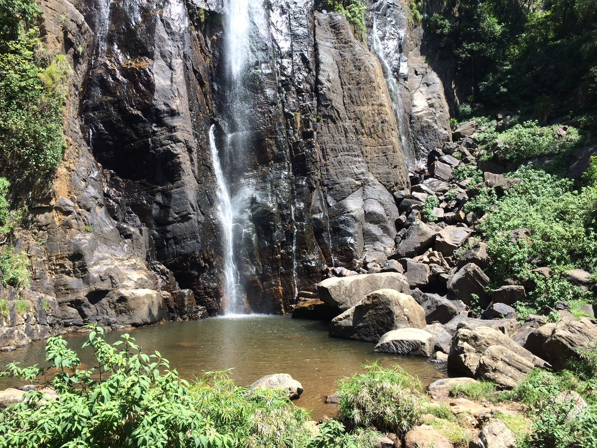
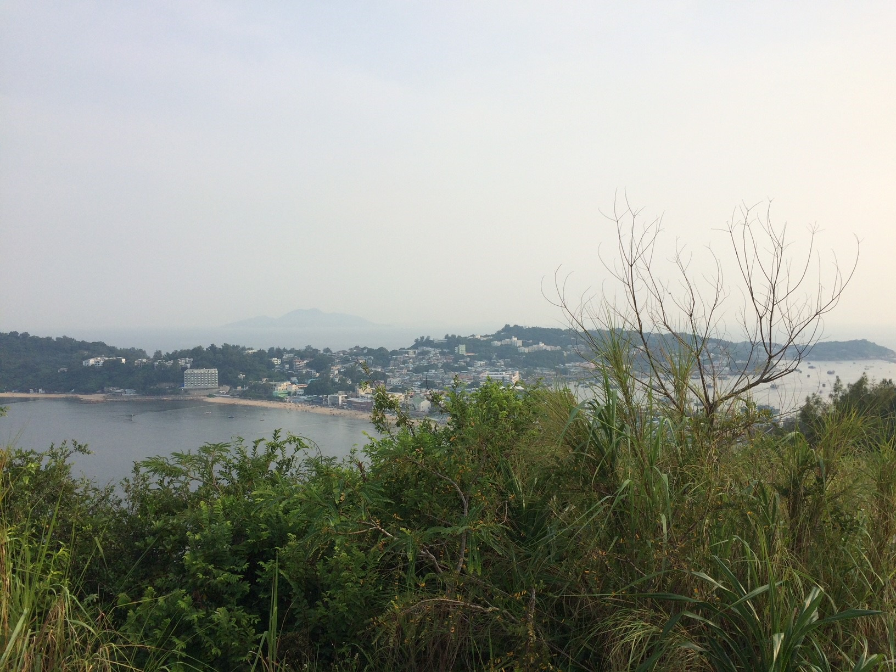
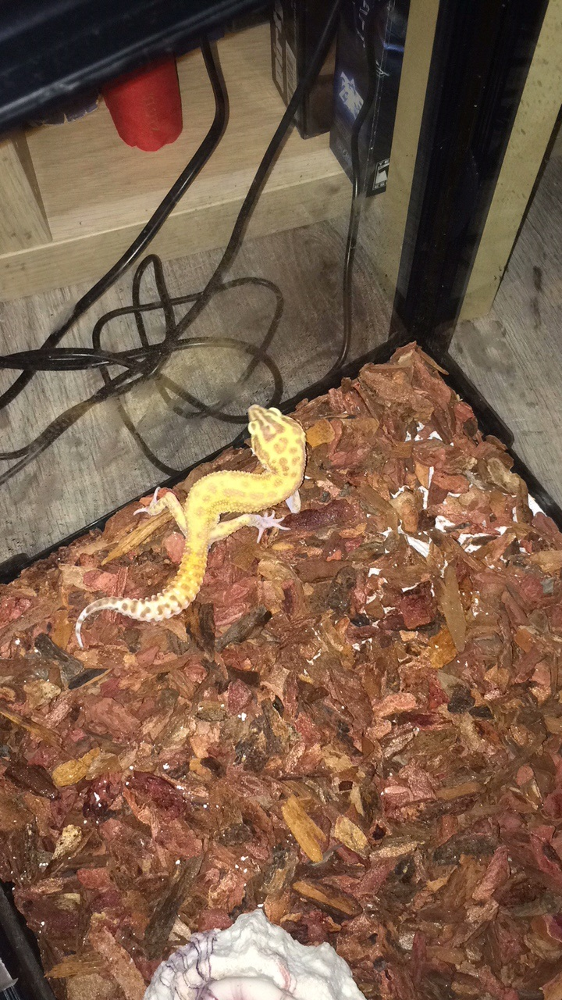
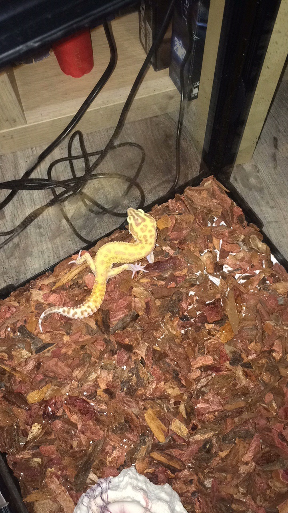
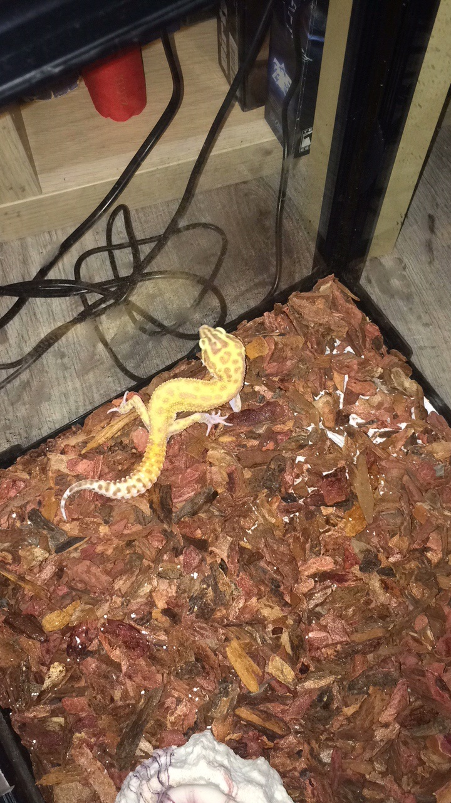
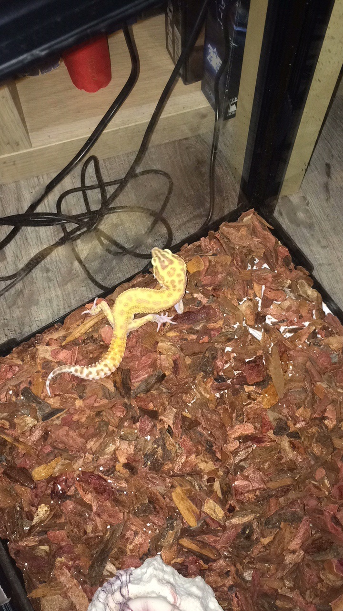

 


I am a creative and driven individual, I enjoy travelling and I have many hobbies including but not limited to camping, hiking, cooking and gaming.
Contact MeI was born and rasied in Hong Kong, however I didn't grow up in the city, I lived on Discovery Bay where I was exposed to the great outdoors. I went to Kennedy and then to West Island School while in Hong Kong, following this I went to the University of Kent to study history.
Following university I worked in food and beverage, and eventually opened the Beach House. After the hours became too much I started to teach English, though this was fulfilling it was not for me.
Since I was lucky enough to go to an international school I have experianced many cultures and been exposed to various beliefs as well as foods. Enjoying the culture is an important part of travelling and therefore when I travel I tend to delve into the local cuisine.
